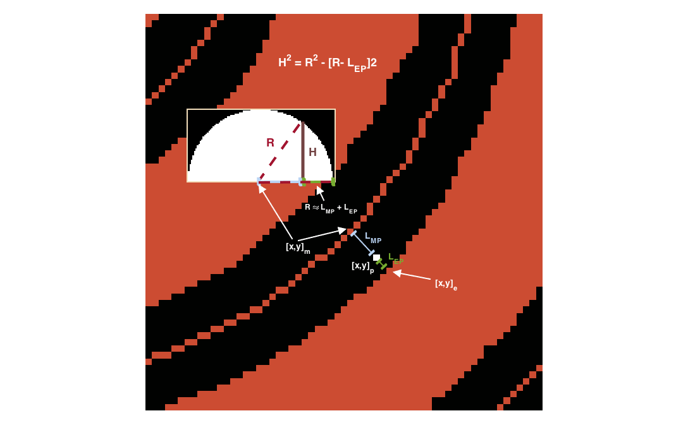

Getting Started: thickness¶
I. OVERVIEW
The ‘RP_thickness’ analysis creates a half-thickness image froma binary segmented image, assuming a cylindrical shape.
In this analysis, a skeleton (i.e. medial axis transform) of the binary image is calculated. A distance transform of the root is then calculated - the distance transform on the medial axis pixel is labeled a “root radius” value R.
From here, for every pixel [x, y]_p, the following are calculated:

- (1): [x, y]_m - medial axis pixel closest to [x, y]_p
- (2): [x, y]_e - object pixel closest to [x, y]_p
- (3): L_MP - distance from [x, y]_m to [x, y]_p
- (4): L_EP - distance from [x, y]_e to [x, y]_p
Outline of the individual components in the thickness analysis.
We assume that L_MP and L_EP are on an equal plane, thereby making R = L_MP + L_EP. Then, assuming a cylindrical distribution around the medial axis, we can calculate the half-dome height H of the pixel as follows:

Final product of the thickness analysis, with a 3D surface image of a selected area. Note that the surface image is not 3D due to different scaling between the z and xy axis.
II. HOW TO USE
First, open the ‘user_config’ text file in your ‘Root_Processing’ directory. The parameters used in ‘RP_thickness’ are in the 8th section, and there will be two parameters. In order, they are:
- image_filename: this is the full image filename (including directory) where the image is to be found.
- output_filename: this is the full image filename (including directory) where the image is to be saved. If the directory is not present, the analysis will automatically make the directory.
III. RUNNING THE CODE
This analysis can be conducted using the [‘RP_thickness’] string in the ‘RP_run’ module.